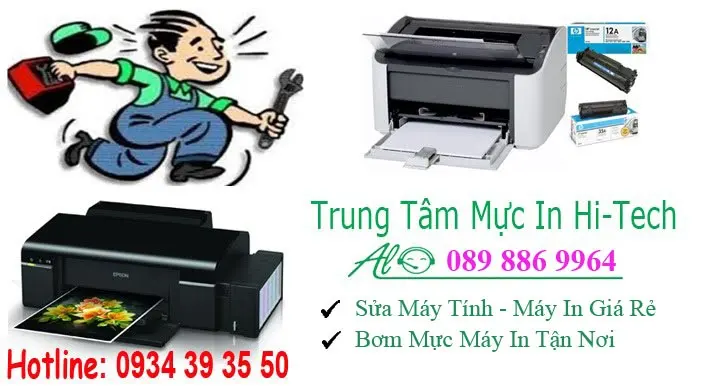
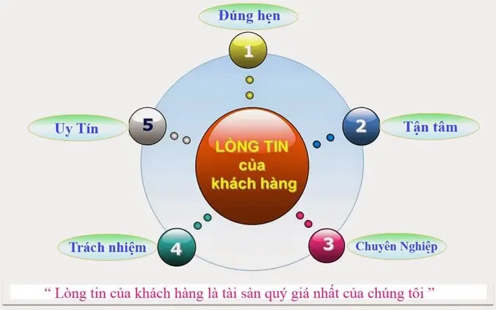

Nạp mực in quận Tân Phú | Có Mặt Nhanh - Bơm Mực In 24/7
TRUNG TÂM MỰC IN HI-TECH
64 Lương Trúc Đàm, Hòa Thạnh, Quận Tân Phú
CN: 56 Tây Thạnh, P. Tây Thạnh, Quận Tân Phú
Tel : 089 886 9964 Zalo : 0934 39 35 50
Công Ty Mực In Hi-Tech chuyên Nạp mực máy in quận tân phú, Dịch vụ bơm mực máy in tận nơi - tại nhà khách hàng. Có mặt nhanh nhất chỉ 20 phút. Nhận nạp mực in các loại Hp - Canon - Samsung - Brother - Ricoh - Panasonic, Bơm mực máy in trắng đen, máy in màu các loại
Nạp Mực Máy In Tận Nơi Quận Tân Phú - Tới nhanh nhất chỉ 20 Phút

Hi-Tech Computer cam kết : Nhanh Nhất – Rẻ Nhất – Chất Lượng Nhất
Nạp Mực Máy In Tận Nơi Quận Tân Phú : Uy Tín - Nhanh Nhất
- Nạp mực máy in tận nơi laser trắng đen các loại
- Đổ mực máy in phun màu liên tục tại nhà
- Bơm mực thay chíp máy in Laser màu : Hp - Canon - Brother
- Dịch vụ sửa máy in tận nơi Tphcm tại quận 1, 3, quận 5 ... Tân Phú
- Ngoài ra Hitech còn sửa máy tính, hệ thống mạng và tổng đài điện thoại nhanh.
- Sửa chữa máy in giá rẻ như: không in được, kẹt giấy, không load giấy, rách bao lụa....
2. Lợi ích Bơm mực in tận nơi Tân Phú Của Hi-Tech ?
- Nạp mực máy in quận tân phú, nhanh nhất chỉ 20 phút
- Dịch vụ bơm mực máy in tại nhà.
- Hi-tech luôn làm việc thứ 7, chủ nhật và ngày nghĩ lễ - 24/7
- Nạp mực máy in giá rẻ - tiết kiệm chi phí cho khách hàng.
- Sửa máy in tận nơi nhanh và đảm bảo uy tín
- Hitech Luôn nhận trách trách nhiệm nếu có sự cố xẩy ra.
- Nạp mực máy in, sửa máy in, máy tính luôn đi kèm với chế độ bảo hành.
- Bản in luôn đẹp sau khi nạp mực và in thử.
- Chỉ nhận thanh toán khi khách hàng hài lòng về chất lượng và dịch vụ
- Hướng dẫn, hỗ trợ sửa miễn phí qua điện thoại
- Với công ty, doanh nghiệp có thể thanh toán công nợ vào cuối tháng.

3. Chất Lượng Dịch Vụ Của Hitech Như Thế Nào ?
- Với đội ngũ kỹ thuật nhiều năm kinh nghiệm trong lĩnh vực máy in và máy tính, rãi đều tại các quận huyện Tp HCM như: quận 1, quận 3, quận 5, 6, 10, 11, quận Phú nhuận, quận Tân phú ...
- chúng tôi luôn mong muốn đem đến dịch vụ nạp mực máy in tận nơi quận tân phú nhanh & chất lượng nhất, cùng với chế độ hậu mãi và bảo hành Uy tín.
- Nắm bắt nhu cầu cần nạp mực máy in tại nhà nhanh cho chất lượng đẹp của Quý công ty, doanh nghiệp cũng như những cá thể khác. Mực in Hi-tech luôn nhắc nhở mỗi KTV phải luôn lấy quy tắt " khách hàng là thượng đế " để phục vụ tốt nhất. có được niềm tin của quý khách hàng là sự thành công của chúng tôi
- Luôn có kỹ thuật túc trực tại quận Tp HCM, Khi quý khách gọi sẻ có kỹ thuật đến ngay trong vòng 20'
- Bơm mực in tại quận tân phú có xuất hóa đơn vat đầy đủ, chế độ hậu mãi và bảo hành uy tín

-->> hãy cho chúng tôi biết " Loại máy in bạn đang dùng & địa chỉ". kỹ thuật viên sẻ đến ngay trong vòng 20' : Hotline - 089 886 9964 - Zalo : 0934 393 550
BẠN cần nạp mực máy in GẤP 24/7 tại HCM ? Hãy gọi : 089 886 9964 - Zalo: 0934 393 550
Dịch vụ tin học Hi-Tech HCM gởi đến quý khách lời chào trân trọng nhất. Cảm ơn quý khách đã sử dụng dịch vụ đổ mực máy in tại nhà của công ty chúng tôi trong thời gian qua. Với độ ngũ kỹ thuật viên tay nghề cao, nhiều năm kinh nghiệm, chúng tôi luôn đặt tiêu chí: " Khách hàng là thượng đế" lên hàng đầu
Bảng Giá Bơm Mực In Quận Tân Phú
Công ty chúng tôi chuyên: nạp mực máy in tận nơi, bơm mực máy in tại nhà, sửa máy tính, máy in tại các Quận như: Quận 1, Quận 3, Quận 5, Quận 6, Quận 10, Quận 11, Quận Tân Phú, Quận Gò Vấp, Quận Bình Tân, Quận Phú Nhuận....
Dịch Vụ Sửa Chữa, Bơm Mực Máy In Tận Nơi
- Kiểm tra, sửa chữa, cài đặt phần mềm máy in, máy fax
- Nạp mực máy in laser trắng đen: Hp, Canon, Brother, Samsung...
- Nạp mực máy in laser màu : HP, Canon, Brother......
- Đổ mực máy in phun màu tận nơi: HP, Canon, Epson...
- Thay thế linh kiện máy in, mực in chính hãng, giá rẻ
- Đổ mực máy in chất lượng, kiểm tra sự cố máy in, máy fax...
- Dịch vụ vệ sinh mực in, máy in tận nơi giá rẻ Tp.HCM
- Dịch vụ bơm mực máy in nhanh ở quận tân phú khi bạn Cần Gấp

Các Dịch Vụ Liên thay mực in Tại Quận Tân Phú
- Công Ty Nạp mực máy in canon tận nơi quận Tân Phú
- Công Ty Bơm mực máy in A3, A4 ở quận Tân Phú HCM
- Công Ty Bơm mực máy in màu các loại như Hp, Canon, Brother ...
- Công Ty Thay mực máy in Samsung tận nơi quận Tân phú HCM
- Công Ty Nạp mực máy in Brother ở quận Tân phú
- Công Ty Đổ mực máy in Recoh tận nơi quận tân phú HCM
- Dịch vụ Đổ mực máy in Xeroc tại quận tân phú HCM
- Dịch vụ Nạp mực máy in Lexmark ở quận tân phú HCM
- Dịch vụ thay mực tại quận tân phú máy in hp, canon tại HCM
- Dịch vụ Đổ mực máy in các loại Panasonic, xerox, recoh ở quận
- Bơm mực máy in uy tín, giá rẻ ở quận tân phú tại Tp. HCM
- Đổ mực máy in HP M402d/ M403/ M401
- Đổ mực máy in HP M102/ M104/ M130
- Thay Băng mực máy in Kim Epson LQ 300, 310, 2190 ..
- Đổ mực máy in màu brother MFC L 8690 Tận nơi chuyên nghiệp
Ngoài đổ mực máy in tại nhà quận tân phú
- Dịch vụ tận nơi Sửa máy in bị kẹt giấy ở quận Tân Phú
- Dịch vụ Sửa máy in báo lỗi đèn đỏ, không in được tại quận tân phú
- Sửa máy in tại nhà không láy giấy lên được ở quan tan phu HCM
- Sửa máy in tại nhà bị hư không in được tại nhà quận tan phu Tp HCM
- Sửa máy in tại nhà không lên nguồn ở quận tan phu HCM
- Sửa máy in tận nơi bị lem, nhòe mực ở quận tan phu
- Sửa máy in không nhận mực in ở quận tan phu Tp. HCM
- Sửa máy In nhanh và rẻ ở quận tân phú
Quy Trình Nạp Mực Máy In Tận Nơi Quận Tân Phú
1. Lựa chọn mực theo đúng hãng máy in
2. Tháo các bộ phận của hộp mực
3. Làm vệ sinh ố hút sạch bụi, dò các hư hỏng hao mòn của các bộ phận.
4. Hút sạch mực thừa
5. Lắp ráp các chi tiết đã làm sạch
6. Đổ mực mới
7. Reser hộp mực nếu cần
8. In test để kiểm tra chất lượng
9. Bảo dưỡng máy miễn phí trước khi thay, đổ mực máy in
10 Tư vấn về mực máy in, giao, thay và đổ mực tại địa điểm khách hàng yêu cầu
11. Hỗ trợ bảo hành đến hết mực trong máy.
Các dịch vụ liên quan đến nạp mực máy in tận nơi
+ Nạp mực máy in cho các dòng máy HP, Canon, Samsung, Epson, Brother, Lexmark, Xerox...
+ Sửa chữa tất cả các lỗi máy in như: kẹt giấy, in mờ, không load giấy ...
+ Bơm mực cho các dòng máy in phun.
+ Lắp đặt hệ thống mực in liên tục.
+ Thay film máy fax, sửa chữa máy scan, photo...
+ Cung cấp linh kiện máy in chính hãng: Trống in, gạt mực, drum máy in
+ Cung cấp hộp mực chính hãng
+ Reset chip mực in
+ Các giải pháp về in ấn
+ Mua bán, trao đổi linh kiện máy in, mực in, máy in chính hãng
Các chi nhánh nạp mực in của Hi-Tech tại Tphcm
- Bơm mực in quận 1
- Nạp mực máy in quận 3
- Bơm mực in Quận 10
- Bơm mực máy in quận 11
- Thay mực in tại quận tân bình
Công Ty Tin Học Hi-Tech
Tel: 089 886 9964 - Zalo: 0934 393 550
Website: https://www.tinhocht.com/
Địa bàn nhận nạp mực máy in tại Quận Tân Phú
Từ cửa hàng ở 79 Bắc Hải (Quận 10) sang Quận Tân Phú khoảng 6 km, kỹ thuật chạy mất chừng 15 phút. Đây là quãng đường đi lại hằng ngày nên khách gọi buổi sáng thường được nhận trong buổi.
Kỹ thuật nhận việc trên khắp các tuyến Luỹ Bán Bích, Âu Cơ, Tân Kỳ Tân Quý, Gò Dầu, Hoà Bình, Trường Chinh và Thoại Ngọc Hầu cùng những khu vực lân cận. Khách ở quanh Aeon Mall Tân Phú, chợ Tân Hương, chợ Sơn Kỳ và khu công nghiệp Tân Bình là nhóm gọi thường xuyên nhất, phần lớn là văn phòng, cửa hàng photo và hộ kinh doanh in hoá đơn mỗi ngày.
Nhà hoặc công ty nằm trong hẻm, trên tầng cao hay trong toà nhà văn phòng đều nhận bình thường, không tính thêm phí. Máy đặt ở đâu thì bơm mực ngay tại đó, không cần tháo máy mang đi.
Nhận diện máy sắp hết mực trước khi nó dừng giữa chừng
Tân Phú nhiều tiệm photo, shop online và hộ kinh doanh quanh Aeon Mall — Luỹ Bán Bích, nơi máy in chạy đơn hàng cả ngày. Với nhóm này máy dừng là đơn hàng dừng, nên đừng đợi máy trắng trang mới gọi. Bốn dấu hiệu dưới đây xuất hiện là mực đã cạn tới đáy:
Thấy một trong bốn dấu hiệu, gọi trước một ngày là chủ động được giờ trống của tiệm mình. Thợ tới nơi kiểm tra, báo giá cụ thể cho chủ tiệm trước khi tháo máy — đồng ý mới làm, làm xong in thử chính loại giấy tiệm hay dùng.
Tiệm đang có khách — thay mực máy in mất bao lâu?
Câu chủ tiệm photo hỏi nhiều nhất không phải giá mà là máy phải nghỉ mấy phút. Trả lời thật: máy laser trắng đen nghỉ khoảng 15 phút; máy in phun màu lâu hơn, chừng 25–30 phút nếu phải thông đầu phun. Thợ phụ trách khu Tân Phú thường trực quanh Luỹ Bán Bích — Tân Kỳ Tân Quý nên buổi sáng gọi, trưa vắng khách là làm xong.
| Tình huống của tiệm | Cách xử lý hợp lý nhất |
|---|---|
| Đang in dở xấp đơn hàng, mực nhạt dần | Bơm mực máy in ngay tại tiệm, chọn khung giờ vắng khách |
| Máy chính hỏng nặng, đơn không chờ được | Thợ mang máy về xưởng sửa, tiệm dùng máy dự phòng — có biên nhận ghi rõ hẹn trả |
| In tem, in ảnh bị lệch màu | Thông đầu phun + cân màu lại, làm tại chỗ để thử ngay trên giấy in thật |
| Muốn khỏi lo giữa mùa cao điểm | Hẹn thay mực máy in định kỳ trước Tết và mùa tựu trường — hai đợt in nhiều nhất năm |
Hộ kinh doanh in số lượng lớn nên cân nhắc thêm một hộp mực nạp sẵn để xoay vòng: hết là thay ngay trong một phút, hộp cạn đưa thợ bơm lại trong lần ghé sau. Tiền mực không đổi mà máy gần như không có phút chết. Máy giở chứng giữa mùa — kẹt giấy liên tục, kéo giấy đôi — thì gọi sửa máy in theo cùng số hotline — thợ cũng kiểm tra rồi báo giá trước khi làm, không phải tìm chỗ khác.
Cần biết trước con số cụ thể từng dòng máy, mở bảng giá nạp mực niêm yết theo dòng máy — giá tiệm photo hay hộ kinh doanh đều như nhau.
Giá nạp mực máy in bao nhiêu tiền?
Bảng giá áp dụng tại TP.HCM, đã gồm công đến tận nơi — không phụ thu phí đi lại:
| Loại máy in | Giá nạp mực |
|---|---|
| HPLaser trắng đen | 90.000VNĐ / lần nạp |
| HPLaser màu | 300.000VNĐ / lần nạp |
| CanonLaser trắng đen | 90.000VNĐ / lần nạp |
| CanonLaser màu | 300.000VNĐ / lần nạp |
| BrotherLaser trắng đen | 140.000VNĐ / lần nạp |
| SamsungLaser trắng đen | 120.000VNĐ / lần nạp |
| PanasonicLaser trắng đen (máy in – fax) | 150.000VNĐ / lần nạp |
| XeroxLaser trắng đen | 120.000VNĐ / lần nạp |
| Epson · Canon · HP · BrotherMáy in phun màu | 90.000VNĐ / lần nạp |
- Giá trên đã bao gồm công nạp mực tận nơi trong nội thành TP.HCM — không phụ thu phí đi lại.
- Bảo hành đến hết mực nếu bản in bị lỗi sau khi nạp.
Câu hỏi thường gặp khi nạp mực máy in Quận Tân Phú
Có làm ngoài giờ và cuối tuần ở Quận Tân Phú không?
Có. Nhận cả thứ 7, chủ nhật, ngày lễ và buổi tối. Cần gấp ngoài giờ thì gọi trước để kỹ thuật sắp lịch, không tính phụ phí ngoài giờ.
Bảo hành sau khi nạp mực thế nào?
Bảo hành đến khi hết hộp mực. Trong thời gian đó bản in bị mờ, lem hay sọc thì gọi lại, kỹ thuật quay lại xử lý miễn phí.
Nạp mực máy in ở Quận Tân Phú giá bao nhiêu?
Máy in laser trắng đen 90.000đ, laser màu 300.000đ, máy in phun 90.000đ — giá đã gồm công tới tận nơi trong Quận Tân Phú, không phụ thu phí đi lại. Máy cần thay thêm linh kiện thì báo giá trước khi làm.
Khu vực nào trong Quận Tân Phú được nhận nạp mực tận nơi?
Toàn bộ Quận Tân Phú, gồm các tuyến Luỹ Bán Bích, Âu Cơ, Tân Kỳ Tân Quý, Gò Dầu và vùng quanh Aeon Mall Tân Phú, chợ Tân Hương, chợ Sơn Kỳ. Nhà trong hẻm hay văn phòng trên tầng cao đều nhận, không tính thêm phí đi lại.
Nạp mực máy in ở khu vực gần Quận Tân Phú
Kỹ thuật phụ trách Quận Tân Phú cũng nhận việc ở các quận sát bên. Nhà hoặc công ty nằm ở ranh giới thì bấm vào khu vực gần mình nhất để xem giá và thời gian có mặt: